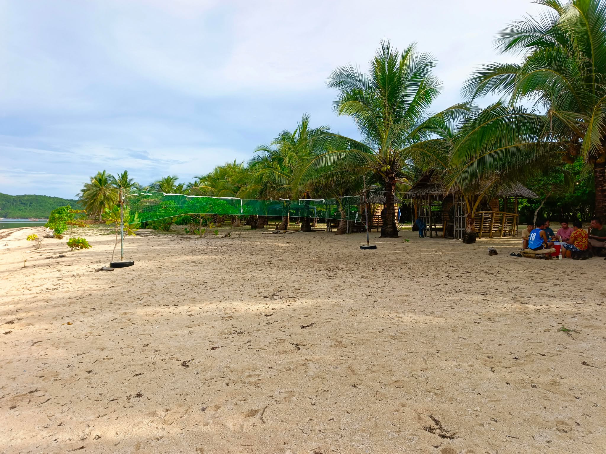

Coca Beach Resort
Coca Beach is one of the hidden coastal treasures of Barangay Sapao in Guiuan, Eastern Samar. Tucked away from the bustling town proper, this beach offers a peaceful and almost untouched seaside experience that appeals to travelers seeking relaxation and natural beauty. It is not widely known outside the local community, which helps preserve its quiet charm and uncrowded shores. The journey to Coca Beach involves a walk through a simple, tree-lined trail that suddenly opens up to the vast and breathtaking view of the Pacific Ocean. Once there, visitors are welcomed by open-air cottages with nipa and bamboo architecture, offering a true taste of the laid-back Eastern Visayan lifestyle. These cottages are available for rent at budget-friendly rates, ranging from ₱500 to ₱1,000, depending on size and features, making the beach accessible to students, families, and local tourists alike.
According to the granddaughter of the owner of the beach resort, the name of the beach was taken from her grandfather and grandmother’s name “Cornelio Sison” and “Caridad Sison” hence the name COCA taken from the first two letters of their name. According to her Coca was not actually a planned business since it started out to be a private property of their family before the pandemic on 2019 occurred, it was nothing but a simple place for them to get to when they wanted to hang-out, during the pandemic it was cleared off of its surroundings because they wanted to have a place where they can unwear their mask, a place where all their family can get to without the worry of taking off their mask. Later on their family decided to make it available to the public and make it a beach resort, it is now well known it the area for family outings, and other recreational activities.
Although Coca Beach is not a war site or religious landmark, its peacefulness and simplicity reflect the lifestyle and values of the Guiuananons—resilience, hospitality, and harmony with nature. With its blend of scenic landscapes, cultural touchstones, and accessibility, Coca Beach serves not just as a local hangout, but as a meaningful destination for those who want to experience Samar's understated beauty and community warmth.
